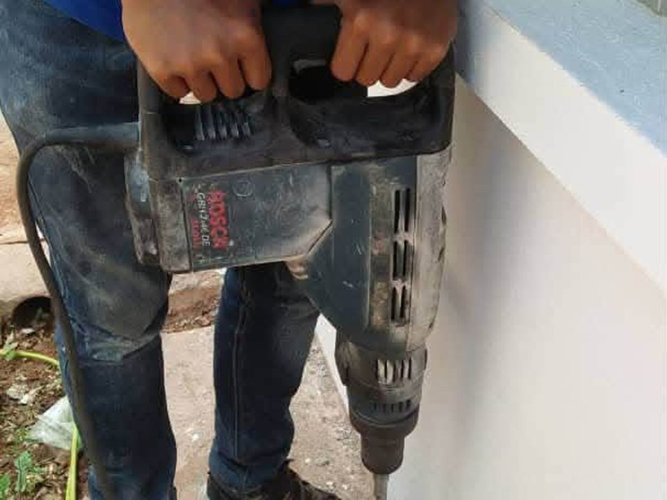
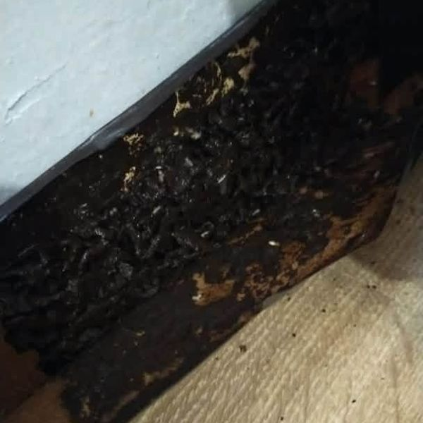
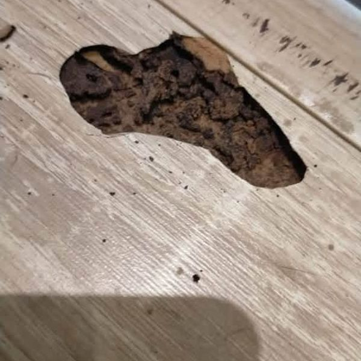
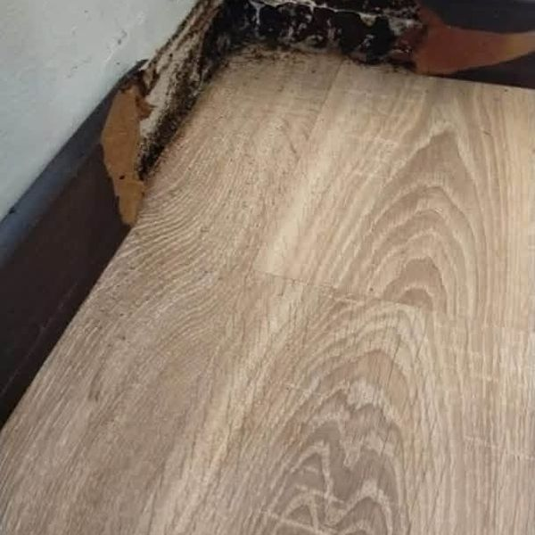
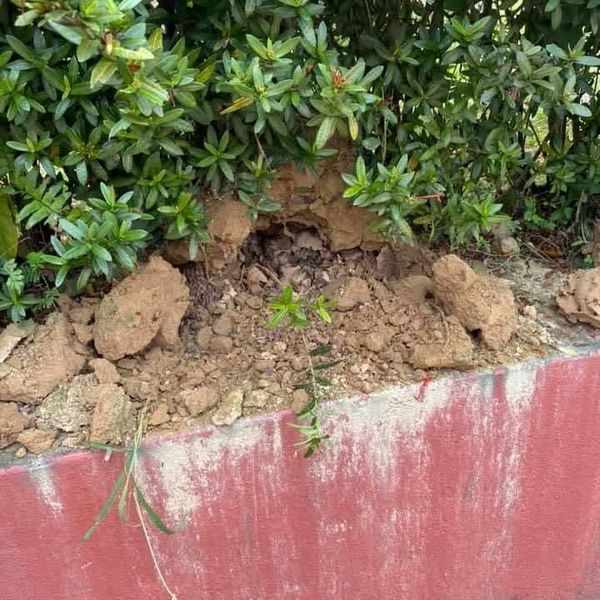

Kota Bharu · Kelantan
Pemeriksaan tapak, rawatan menyeluruh sampai ke koloni dan pemantauan berkala. Waranti bertulis sehingga 5 tahun*. Pemeriksaan dan sebut harga percuma.

Semak Masalah · 1 minit
Jawab 5 soalan ringkas. Anda dapat laporan awal dan boleh terus hantar ke WhatsApp kami bersama gambar.
Ini anggaran awal berdasarkan jawapan anda, bukan diagnosis. Juruteknik kami akan sahkan di tapak.
Hantar laporan + gambar di WhatsAppKenapa pilih kami
Sehingga 5 tahun*, tertakluk terma.
Rawatan menyeluruh untuk mencegah serangan berulang.
Selamat untuk keluarga dan haiwan peliharaan.
Servis
Rawatan menyeluruh sampai ke koloni, waranti sehingga 5 tahun*.
Singkir kelawar dan bersihkan kawasan bersarang.
Kenali tandanya
Bila kerosakan nampak, biasanya koloni sudah lama di dalam. Ini tanda yang patut anda periksa minggu ini.

Kayu di tepi lantai sudah dimakan

Lantai kayu berlubang

Laluan anai-anai di skirting

Busut atau tanah gembur di halaman
Kayu berbunyi kosong bila diketuk
Sayap kelkatu bersepah di lantai
Keselamatan keluarga
Premis niaga
Rawatan kami sesuai untuk rumah, pejabat dan premis.
Kawasan servis
Kawasan anda tiada? Tanya kami di WhatsApp.
FAQ
Waranti sehingga 5 tahun, tertakluk terma. Juruteknik akan terangkan tempoh untuk rumah anda semasa pemeriksaan.
Kelawar boleh terperangkap dan mati di dalam siling, lalu bau busuk jadi lebih teruk. Ia perlu keluar dahulu.
Boleh. Guna Semak Masalah di atas, kemudian hantar gambar di WhatsApp supaya kami faham keadaan sebelum datang.
Hantar gambar sekarang. Lagi awal dikesan, lagi kecil kerosakan.
WhatsApp 011-6066 5193